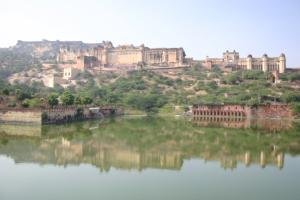
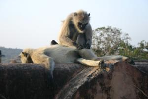

Le 4 décembre 2004,
Après avoir quitté notre hôtel et déposé nos gros sacs à dos à la consigne de la gare, nous projetons de nous rendre au fort d’Amber en bus local. Arrivés au centre de ville de Jaipur, nous attendons notre bus une bonne demi-heure mais il n’arrive pas. Il faut préciser qu’une grosse manifestation religieuse ou politique (ou peut-être même les deux à la fois ...) bloque la circulation sur toute la place. Un peu fatigués par le bruit de la ville et par un ou deux regards insistants, nous décidons de prendre un rickshaw en négociant convenablement le tarif (nous commençons à devenir experts, surtout Eve-Laure !). Amber, ancienne capitale du Rajasthan, se situe à 11 km de Jaipur.
A peine arrivés, nous sommes assaillis par les mendiants. Nous nous réfugions dans un "boui-boui" qui fait office de restaurant local et avalons deux samosas, des chapatis et des sucreries au lait bouilli. Déclinant les invitations pour monter en Jeep ou à dos d’éléphant, nous commençons notre ascension vers le fort, perché en haut d’une colline et dont l’imposante stature se réfléchit dans un lac.
 L’édifice, construit au XVIe siècle par Man Singh, un maharaja de l’empereur Ackbar, est en fait un véritable labyrinthe. Toujours aussi doués en orientation, nous nous y perdons inévitablement. Pour parfaire l’opération, Eve-Laure s’assomme à moitié en entrant dans une salle un peu trop basse de plafond. Après un massage peu tendre effectué par un employé du fort, qui au passage nous indique plus ou moins charitablement la sortie, notre héroïne ragaillardie, décide d’entamer une montée de deux kilomètres et demi en plein soleil vers un deuxième fort, Jaigarh, construit plus d’un siècle après Amber, et jamais pris par l’ennemi. Il est, d’ailleurs, beaucoup moins mal en point que celui-ci.
 Nous découvrons donc cette deuxième forteresse, sous les chaudes couleurs d’un soleil déclinant et accueillis par ses nouveaux occupants : une tribu entière de singes aux mines plus expressives les unes que les autres.
Pas mécontents de notre petite escapade hors de la cohue de Jaipur, nous regagnons la gare, récupérons nos sacs et partons à la recherche de notre train couchettes. Un français d’une cinquantaine d’années partage notre compartiment. Il voyage avec sa compagne asiatique qu’il a rencontrée dans le sud de la Thaïlande. Il nous donne quelques tuyaux sur l’ancienne Indochine, notre prochaine destination. Puis, un peu bousculés par un voyageur indien peu commode, nous mettons nos banquettes en position couchettes et entamons une nuit, pour le moins frisquette !
Michaël
{kind=link}
{kind=link}